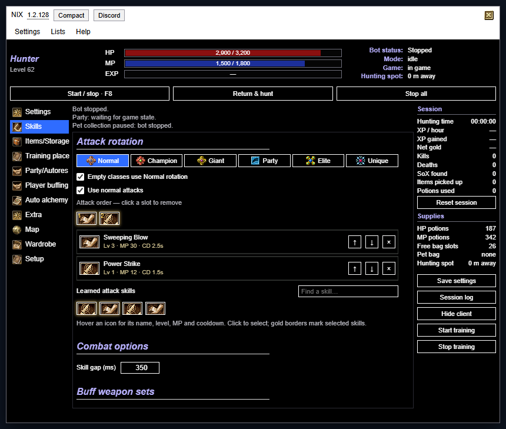

Combat
Attack skills, buffs and weapon imbue around a saved hunting spot.
Combat, potions, pet loot and town trips, in one compact Tampermonkey script. Set your spot, pick your skills, press F8.

What it does
Attack skills, buffs and weapon imbue around a saved hunting spot.
HP, MP and vigor thresholds, cure pills and pet recovery kits.
Your pet collects drops while you fight, by your own filters.
Sell, repair, restock and reverse-scroll back to the hunt.
Heal and buff party members, recruit and follow.
Gets back into the game after a disconnect and hunts on.
Quick setup
Install Tampermonkey in your browser.
Install the bot, disable other OpenSRO bot scripts, then reload the game.
Save your hunting spot, choose skills, set loot and potions, then hit F8.
F8 Start / stopF7 FoldShift+F7 Hide / showF6 or × Minimise / restore
Fresh off the press
Loading…